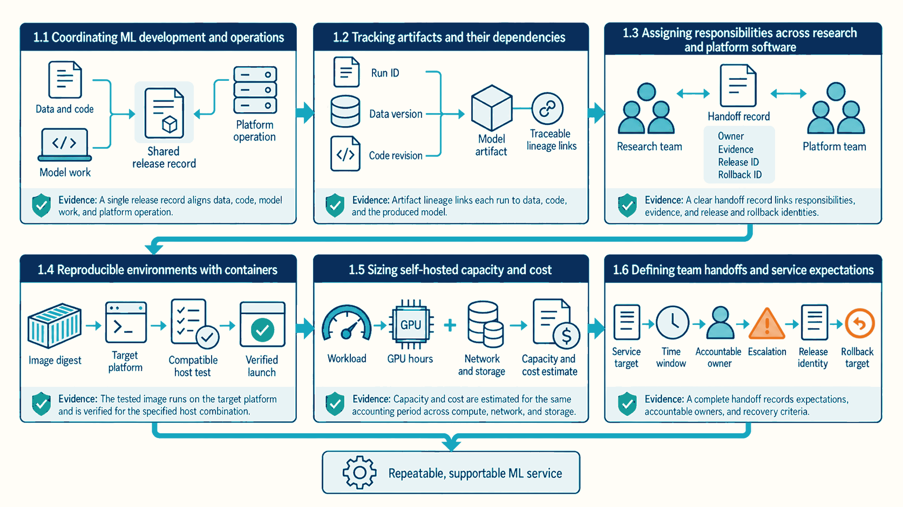

1 Making machine learning runs reproducible
When a model run’s code, data, runtime, or approval record is unclear, another engineer cannot reliably reconstruct what was tested or decide whether that version is ready to deploy. Production adds shared resources, failures, and evidence requirements.
When a model run’s code, data, software environment, or approval record is unclear, another engineer cannot reliably reconstruct what was tested or decide whether that version is ready to deploy. Production adds shared resources, failures, and evidence requirements.
Chapter map: reproducible machine learning runs
The sections answer three linked questions:
- 1.1–1.3: Which records identify a tested run, and who operates the surrounding platform?
- 1.4: How does an image build recipe create a portable runtime?
- 1.5–1.6: Can the selected service meet demand, and which team is responsible for each setting and handoff?

1.1 Coordinating ML development and operations
One experimental run proves that code can run once. The unresolved problem is making the run repeatable for other people, machines, and dates. The next steps record the inputs, choose compute, store the outputs, and make recovery possible.
- Machine Learning Operations (MLOps): The combined engineering practice for automating, operating, measuring, and scaling training, inference, and data pipelines.1
Complete details for every cited source appear in References.
For the grounded-answer service in the Introduction, MLOps keeps the records that show which model revision, prompt, and document snapshot produced a disputed answer. The MLOps workflow records a candidate model’s inputs, requests the required compute, stores outputs with their history, supports rollback, and turns production evidence into the next evaluation or training case. Inference uses fixed trained parameters to produce an output, while training changes them and evaluation checks results without changing them, as established in the Introduction.
A shared platform may serve several customers or groups of users. A tenant is a customer or group that the system treats as one unit for data access and resource limits.2 The tenant identifier tells the system which group’s rules apply. One tenant can include many users. The platform still needs checks that enforce those rules.3
Four disciplines contribute to the work:
- Machine learning: defines the model, objective, data meaning, and quality measurements.
- Software engineering: turns experimental logic into testable packages, APIs, and maintainable interfaces.
- Data engineering: moves, validates, transforms, and retains the records that training and evaluation consume.
- DevOps and platform engineering: provisions compute, deploys services, isolates tenants, observes failures, and automates recovery.
System principle
Operational reproducibility starts with version tracking across software and data dependencies:
- A versioned production bundle contains model weights together with code, data definitions, runtime configuration, infrastructure assumptions, and evaluation evidence.
- If one ingredient changes without a new identity, the record no longer identifies the tested combination. Version tracking identifies the tested inputs and supports reconstruction and rollback targeting. Numerical repeatability also depends on hardware, platform, and software choices.4
1.2 Tracking artifacts and their dependencies
Even with those disciplines in place, coordination fails when their outputs are stored as unnamed local files or remembered commands. Artifact types, fixed version identities, and links between inputs and outputs let an engineer trace a result back to the run that produced it.
- Artifact: A stored record or output that can be found through its identifier. Its identity can link directly to the code, configuration, and inputs associated with it.
Execution starts from a fixed code version, such as a Git commit identifier or a locked source archive, in a recorded environment. A Container image packages application files and runtime defaults. Its digest identifies fixed image content, including any packaged Python dependencies, libraries used to run GPU computations, and framework versions.5 A Cryptographic hash is a value calculated from content bytes. Comparing a newly calculated hash with the recorded value checks for content changes.6 A separate record identifies the host driver, kernel, and hardware.7 Training consumes a versioned dataset snapshot with checks of the expected fields and data types and recorded training/evaluation splits. Its run configuration records training settings, random-number seeds, and compute requests.
Checkpoint is a record at a training step of model weights, saved information used to continue weight updates, and other training state from which a compatible run can resume. Evaluation jobs produce a record linking dataset slices, metric scores, and raw model outputs.
A Tokenizer is model-specific software that converts text to token IDs and generated IDs back to text. A Token is a text unit that may be a word, part of a word, punctuation or a special marker, depending on the tokenizer.8 Each token ID is an integer identifying an entry in the tokenizer’s vocabulary.
Serving bundle is an immutable package of approved model weights, tokenizer files, model runtime settings, and checks required before release. Chapter 4 develops the bundle into a deployable unit. Chapter 9 extends it with the retrieval collection that the grounded-answer service also needs.
Lineage is the directed relationship between these objects.9 A metric points to exact evaluation outputs. Those outputs point to model and dataset versions. A deployment points to the serving bundle that passed its gates. A filename such as model-final-v2.bin carries none of those links.
| Stage | Input identity | Output identity | Evidence to retain |
|---|---|---|---|
| Data preparation | Raw snapshot + transform revision | Curated dataset version | Schema checks, row counts, rejected records |
| Training | Dataset + code + config + environment | Checkpoint version | Loss/throughput traces, hardware, seed |
| Evaluation | Checkpoint + evaluator + cases | Evaluation run | Raw verdicts, slices, aggregate metrics |
| Deployment | Serving bundle + policy | Release version | Performance, quality, safety, rollback gates |
| Operation | Release + live traffic | Telemetry and incidents | Logs, metrics, traces, sampled outcomes |
Troubleshooting walkthrough: reconstructing a failed training run
This incident investigation traces a failed checkpoint through its lineage to restore execution:
- Observed symptom: The evaluation task reports a missing checkpoint after the training worker exited.
- Identity lookup: The run manifest resolves the source revision, image digest, dataset snapshot, configuration hash, worker attempt, and expected checkpoint generation.
- Lineage check: The artifact store contains a temporary file tied to the failed attempt. It lacks the final completion record marking the checkpoint ready for later tasks, so the evaluation task cannot use that partial output.
- Recovery decision: The pipeline retries from the last complete checkpoint with the same immutable inputs, while the failed attempt and its logs remain attached to the run.
- Evidence retained: The final record links the failure, retry, checkpoint generation, evaluator result, and release decision without relying on a remembered command.
- Conclusion: For this missing-checkpoint failure, output identity, publication state, and retained worker logs show which attempt failed and which checkpoint remains safe to restore.
1.3 Assigning responsibilities across research and platform software
The platform choice depends on how much control the workload needs over its runtime, hardware, network, and recovery, compared with the work that a provider performs. A managed service can shift some platform work to the provider while the customer retains other duties.10 Managed services, Kubernetes, virtual machines, and bare metal divide control and responsibility differently. Kubernetes itself can be managed or self-managed.
- Infrastructure responsibility: The division of infrastructure work between the application team and a platform or cloud provider.
This illustrative comparison uses service-specific controls and responsibilities. Managed function services reduce machine-management work, while runtime, networking, accelerator, and customization limits depend on the service. Virtual machines and bare metal expose those controls together with patching, scheduling, recovery, and capacity risk.
The options differ in what the team supplies. A managed function service runs submitted code when a request or event arrives. A managed container or job service runs a packaged application on provider-operated machines. Kubernetes is software for placing and operating applications across a group of machines. It runs those applications in containers, whose packaging and execution are explained in Section 1.4. A Virtual machine is a software-created computer with its own operating system, running on a physical host. Bare metal hosting gives the team control of a physical server and its operating system.
| Deployment option | Team controls | Provider controls | Best fit |
|---|---|---|---|
| Function | Code and small configuration | Runtime, scaling, hosts, placement | Short stateless tasks and event handlers |
| Managed container/job | Image, command, resources | Host lifecycle and basic scheduling | Batch preprocessing, fine-tuning, simple inference |
| Managed Kubernetes | Application deployments, access rules, scheduling choices | Cluster management services. Worker-machine duties depend on the node service | Multi-service platforms and shared GPU clusters |
| Virtual machine | Operating system upward | Physical host and facility | Custom runtimes, dedicated services, specialized networking |
| Bare metal | Full host software and accelerators | Facility and physical access | Direct control of host software and hardware configuration |
Infrastructure responsibility: purpose and limits
A team may need a custom GPU runtime and detailed network control for a model service, while another team needs a standard endpoint quickly and can accept the provider’s runtime limits. The first team may select a virtual-machine, Kubernetes, or bare-metal path and take on patching, scheduling, recovery, and capacity work. The second may use a managed service, while still remaining responsible for its data, application behavior, access policy, and release evidence. The suitable choice follows the required controls and the work each side can support.
1.4 Reproducible environments with containers
The deployment option determines who manages the host. A container image is one way to package a runtime for development and production, but its reproducibility depends on pinned inputs and a compatible host. With this approach, image construction, registry distribution, and container execution are distinct steps.
Container image: A filesystem and configuration template identified by a content digest that may contain application code, libraries, and execution defaults. A digest identifies fixed content, while an image tag can change.11
Container: A running process created from an image and isolated with operating-system mechanisms while sharing the host kernel.12
Registry: A service that stores versioned image layers and supplies them to deployment systems.13
The builder reads the Dockerfile recipe and produces an image. Publishing that image uploads its manifest, the record of its contents, and its layers to a registry. The deployment system selects a recorded image digest and downloads those contents to a compatible host. The container runtime creates an isolated process from the image. RUN commands execute while building the image. CMD supplies the default command for a later container start, unless deployment configuration overrides it.
A Dockerfile, the image build recipe, can turn declared build inputs into image layers. Stable dependency steps usually precede frequently changing source code, which allows cached layers to be reused.14 Multi-stage builds allow selective copying that can exclude build tools from the runtime image.15 Transfer and security benefits depend on what remains in that image.
Code example: Abbreviated two-stage portability sketch, not a reproducible build until its base image and uv installation are pinned. Base-image files, compatible interpreter paths, system libraries, and separately recorded host requirements remain part of the runtime contract.
FROM python:3.12-slim AS build
WORKDIR /app
COPY pyproject.toml uv.lock ./
RUN pip install uv && uv sync --frozen --no-dev --no-install-project
FROM python:3.12-slim AS runtime
WORKDIR /app
COPY --from=build /app/.venv /app/.venv
COPY src/ ./src/
ENV PATH="/app/.venv/bin:$PATH"
CMD ["python", "-m", "src.service"]Code walkthrough: multi-stage container packaging
This abbreviated portability sketch separates dependency installation from the final runtime image. It assumes src.service is a source-only module that does not require installed project metadata or generated build files.
- Build stage:
uv, a Python package manager, usesuv sync --frozen --no-dev --no-install-projectto install locked third-party dependencies without trying to install source that has not been copied yet.--frozenuses the existing lock without checking whether it is current, and--no-devomits the development group. This example assumes the default/app/.venvproject environment.16 - Runtime stage:
COPY --from=buildtransfers the resolved environment without transferring the package manager’s build context or compiler tools. - Application layer:
COPY src/appears late, which lets the slower dependency layer remain cached across ordinary source edits. A packaged project instead copies the files needed to install itself and runs a separate locked project-install step. - Startup command:
CMDsupplies the default command, which runssrc.serviceunless deployment configuration overrides it. The image digest identifies the packaged filesystem and defaults. The run record also retains deployment overrides.
- Result: The runtime image contains its base-image files, copied environment, and service files. The copied environment still needs compatible interpreter paths and system libraries.
- Limits: A reproducible build also pins the base-image digest and package-manager version or checksum, then records the resulting image digest. Deployment and security policy determine the additional controls, such as a non-root user, health checks and vulnerability checks. A multi-architecture build is needed when the image must support several processor architectures. Separately controlled runtime access to secrets is needed when the application uses secrets.
Secrets in copied files or build arguments can persist in layers, metadata, history, or logs. Build-time access should use build-secret mounts, while runtime access uses separately governed runtime secrets.17 Ordinary containers share the host kernel. For untrusted code, stronger isolation can use a sandbox or a virtual machine, depending on what the untrusted code could access or change.
Architecture compatibility: hardware target verification
Processor architecture differences can cause runtime failures across build and execution hosts:
- A laptop with an ARM processor can build an image that may not run on an x86 cloud node without a compatible target image or emulation path.18
- An explicit target platform, immutable digest, and test of the exact production CPU/GPU, driver, and runtime combination provide compatibility evidence for that combination.
1.5 Sizing self-hosted capacity and cost
Containers make a runtime portable across deployment options. A large language model adds expensive accelerators, large weight transfers, and ongoing infrastructure work. The service objective determines the capacity assumptions used to compare hosted APIs with self-hosting.
Available model weights can permit self-hosting and adaptation, subject to the actual license and supplied architecture. Open weights do not by themselves establish unrestricted rights or access to training data. Self-hosting also makes the team responsible for availability, throughput, scaling, security, weight distribution, and evaluation. The decision is therefore not simply price per token: it is a comparison between a provider bill and the full cost of hardware, platform engineering, idle capacity, incidents, and optimization.
\[ C_{\mathrm{total}} = C_{\mathrm{fixed}} + C_{\mathrm{compute}} + C_{\mathrm{storage}} + C_{\mathrm{network}} + C_{\mathrm{operations}} + C_{\mathrm{risk}} - V_{\mathrm{residual}} \tag{1.1}\]
For this one-year comparison, \(C_{\mathrm{total}}\) is the total cost. The terms \(C_{\mathrm{fixed}}\), \(C_{\mathrm{compute}}\), \(C_{\mathrm{storage}}\), \(C_{\mathrm{network}}\), \(C_{\mathrm{operations}}\), and \(C_{\mathrm{risk}}\) are costs in the same currency and period. \(V_{\mathrm{residual}}\) is the recoverable equipment value subtracted from that cost. The relationship is an accounting estimate, not a market-price or availability guarantee.
Example: one-year ownership cost
The following illustrative one-year comparison combines assumed cost components:
- Fixed commitment: Reserved hardware and platform commitments cost $120,000.
- Usage: Compute, storage, and network usage total $205,000.
- Operations: On-call, maintenance, and platform engineering allocate $90,000.
- Risk and residual: Expected interruption or shortage exposure is $30,000, while recoverable equipment value is $10,000.
- Total: The one-year comparison cost is $120,000 + $205,000 + $90,000 + $30,000 − $10,000 = $435,000.
- Conclusion: A fair comparison with an API or managed-service alternative uses the same demand, reliability, and quality assumptions (see Appendix A for the generalized total-cost relationship).
A Serving replica is one separately running copy of the model service. It may use more than one GPU, so the replica count is not necessarily a GPU or machine count. Latency measures elapsed time between a chosen start and end. The response-time target here runs from request arrival at the service to completion of its response.
\[ R_{\mathrm{needed}} = \left\lceil \frac{Q_{\mathrm{peak}}}{Q_{\mathrm{replica}} \cdot u} \right\rceil + R_{\mathrm{redundancy}} \tag{1.2}\]
\(R_{\mathrm{needed}}\) is the starting replica count. \(Q_{\mathrm{peak}}\) is peak demand in requests per second, \(Q_{\mathrm{replica}}\) is the measured rate per replica at the stated latency target, \(u\) is the planned utilization fraction, and \(R_{\mathrm{redundancy}}\) is the chosen spare count. The ceiling rounds demand up to a whole replica. This is a planning estimate, not proof that queueing and failures will remain within target.
Example: replicas for a 60 request-per-second peak
The following illustrative capacity estimate uses an assumed benchmark, headroom, and failure reserve:
- Measured capacity: One serving replica sustains 8 requests/s while meeting the latency target. Section 4.1 defines the latency measures behind that target and shows how a token rate becomes a request rate.
- Headroom: At 75% normal utilization, an 8 requests/s benchmark yields 6 planned requests/s per replica.
- Demand replicas: A 60 requests/s peak divided by 6 planned requests/s requires 10 replicas.
- Failure allowance: Two additional replicas cover a host-group loss only if placement limits that loss to two replicas and the remaining replicas meet the workload and latency target.
- Starting deployment: Adding 2 spare replicas to the 10 demand replicas produces a 12-replica starting deployment. A load test with the real prompt and output-length mix validates the estimate.
- Conclusion: Capacity must come from measurements of the serving bundle. Model parameter count alone cannot provide it.
The model and decoding choices used to meet a quality target, together with prompt length, output length, Quantization (representing model weights or other numerical values at lower precision), engine version, GPU type, batching, and latency objectives, can change per-replica capacity. The estimate therefore belongs to one exact serving bundle and is measured again whenever one of those ingredients changes.
1.6 Defining team handoffs and service expectations
An engineer may try to fix low throughput by changing an option in the wrong software layer. The responsibility map separates model code, communication libraries, serving engines, and the orchestrator so that a setting can be traced to the component that uses it.
| Layer | Owns | Examples |
|---|---|---|
| Application | Business request, authentication, quotas, safety policy | FastAPI, gateway services |
| Model/runtime | Model calculations, training updates, output generation | PyTorch, JAX, Transformers |
| Distributed communication | Data exchange and coordinated operations between workers | torch.distributed, NCCL |
| Serving engine | Request scheduling, batching, memory for active requests, inference execution | vLLM, SGLang, TensorRT-LLM |
| Orchestrator | Resource placement, retries, desired state | Kubernetes, Slurm, SkyPilot |
| Pipeline engine | Task dependencies, parameters, history | Airflow, Flyte, Kubeflow Pipelines |
| Observability/evaluation | Telemetry, experiments, test cases, judgments | OpenTelemetry, MLflow, W&B, Langfuse |
| Storage/data system | Durability, sharing, retrieval, replication | Object storage, shared FS, vector databases |
Configuration options are read by specific components. gpu_memory_utilization is a vLLM serving-engine option19, NCCL_DEBUG20 belongs to NCCL, a library that lets GPU worker processes exchange and combine data21, and a Kubernetes GPU resource request belongs to the orchestrator.22 Naming the owner helps teams avoid recommending a setting where it has no effect.
Handoff record: release criteria checklist
A training and operations team can use the following handoff criteria:
- A training team hands over a serving bundle only when the window, accountable owner, escalation path, release identity, rollback target, and evidence links are recorded.
- The receiving team can then answer what changed, which checks passed, who can stop the rollout, and which known-good version is restored if a gate fails.
Suppose a team requires bundle B to pass at least 95% of a fixed set of grounded-answer cases and sustain the Section 1.5 peak of 60 requests/s with 95% of responses below three seconds in a load test. The handoff records the test results and names the on-call operator who stops promotion and restores approved bundle A if fewer than 95% of responses meet the three-second target in a ten-minute rollout window at a comparable request mix.
Chapter 1 summary
The records identify which combination was tested:
- Source, image, dataset and configuration identities link the run to its outputs. Image identity still needs compatible host requirements.
- Capacity estimates belong to the tested serving bundle and workload, rather than model size alone.
- A release handoff records the checks, stop owner and approved rollback target.
Chapter checkpoint
Review Questions 1–3 in Appendix B, Section B.1, to test runtime reproducibility, image identity, and replica-capacity estimation before proceeding to cluster training.
Carry-forward result
Note
The next chapter examines when a training job needs multiple GPUs to fit its state or meet its target completion time.
Google Cloud. (2024, August 28). MLOps: Continuous delivery and automation pipelines in machine learning. Cloud Architecture Center. https://docs.cloud.google.com/architecture/mlops-continuous-delivery-and-automation-pipelines-in-machine-learning. Guidance mainly for predictive ML systems.↩︎
Microsoft. (2025, May 16). Architect multitenant solutions on Azure. Azure Architecture Center. https://learn.microsoft.com/en-us/azure/architecture/guide/multitenant/overview.↩︎
Amazon Web Services. (n.d.). The isolation mindset. AWS Well-Architected SaaS Lens. https://docs.aws.amazon.com/wellarchitected/latest/saas-lens/isolation-mindset.html.↩︎
PyTorch Contributors. (2024, November 26). Reproducibility. PyTorch 2.8 documentation. https://docs.pytorch.org/docs/2.8/notes/randomness.html.↩︎
Open Container Initiative. (2024). Open Container Initiative image format specification: Image configuration (v1.1.0, “ImageID”). Linux Foundation. https://github.com/opencontainers/image-spec/blob/v1.1.0/config.md#imageid. Open Container Initiative. (2024). Open Container Initiative distribution specification (v1.1.0, “Definitions” and “Pushing Manifests”). Linux Foundation. https://github.com/opencontainers/distribution-spec/blob/v1.1.0/spec.md#pushing-manifests. The image configuration identifies content through hashes. The distribution specification describes publishing image manifests under tags.↩︎
Open Container Initiative. (2024). Open Container Initiative image format specification: OCI content descriptors (v1.1.0, “Digests” and “Digest calculations”). Linux Foundation. https://github.com/opencontainers/image-spec/blob/v1.1.0/descriptor.md#digests. The example shows how to hash the bytes and compare the result with the recorded digest.↩︎
NVIDIA. (n.d.). Installing the NVIDIA Container Toolkit. NVIDIA Container Toolkit documentation. https://docs.nvidia.com/datacenter/cloud-native/container-toolkit/latest/install-guide.html.↩︎
Hugging Face. (n.d.). Tokenizer (Transformers main documentation). https://huggingface.co/docs/transformers/main/en/main_classes/tokenizer. The tokenizer reference describes subword token strings, IDs, special tokens, and conversion between strings and IDs. Exact boundaries and IDs depend on the model’s tokenizer.↩︎
Moreau, L., & Missier, P. (Eds.). (2013, April 30). PROV-DM: The PROV data model. W3C Recommendation. https://www.w3.org/TR/2013/REC-prov-dm-20130430/. Sections 2 and 5.↩︎
Amazon Web Services. (n.d.). Shared responsibility model. https://aws.amazon.com/compliance/shared-responsibility-model/.↩︎
Open Container Initiative. (2024). Open Container Initiative image format specification: Image configuration (v1.1.0, “ImageID”). Linux Foundation. https://github.com/opencontainers/image-spec/blob/v1.1.0/config.md#imageid. Open Container Initiative. (2024). Open Container Initiative distribution specification (v1.1.0, “Definitions” and “Pushing Manifests”). Linux Foundation. https://github.com/opencontainers/distribution-spec/blob/v1.1.0/spec.md#pushing-manifests. The image configuration identifies content through hashes. The distribution specification describes publishing image manifests under tags.↩︎
Souppaya, M., Morello, J., & Scarfone, K. (2017, September). Application container security guide (NIST SP 800-190). National Institute of Standards and Technology. https://doi.org/10.6028/NIST.SP.800-190. DOI: 10.6028/NIST.SP.800-190.↩︎
Open Container Initiative. (2024). Open Container Initiative distribution specification (v1.1.0). Linux Foundation. https://github.com/opencontainers/distribution-spec/blob/v1.1.0/spec.md.↩︎
Docker, Inc. (n.d.). Optimize cache usage in builds. Docker Docs. https://docs.docker.com/build/cache/optimize/.↩︎
Docker, Inc. (n.d.). Multi-stage builds. Docker Docs. https://docs.docker.com/build/building/multi-stage/.↩︎
Astral. (n.d.). Locking and syncing. uv documentation. https://docs.astral.sh/uv/concepts/projects/sync/.↩︎
Docker, Inc. (n.d.). Build secrets. Docker Docs. https://docs.docker.com/build/building/secrets/.↩︎
Docker, Inc. (n.d.). Multi-platform builds. Docker Docs. https://docs.docker.com/build/building/multi-platform/.↩︎
vLLM project. (n.d.). Engine arguments (v0.10.2). https://docs.vllm.ai/en/v0.10.2/configuration/engine_args.html.↩︎
NVIDIA. (n.d.). Environment variables. NCCL 2.24.3 documentation. https://docs.nvidia.com/deeplearning/nccl/archives/nccl_2243/user-guide/docs/env.html#nccl-debug.
NCCL_DEBUGcontrols the diagnostic information displayed by NCCL.↩︎NVIDIA. (n.d.). Overview of NCCL. NCCL 2.24.3 documentation. https://docs.nvidia.com/deeplearning/nccl/archives/nccl_2243/user-guide/docs/overview.html.↩︎
Kubernetes Authors. (n.d.). Schedule GPUs. Kubernetes documentation. https://kubernetes.io/docs/tasks/manage-gpus/scheduling-gpus/.↩︎